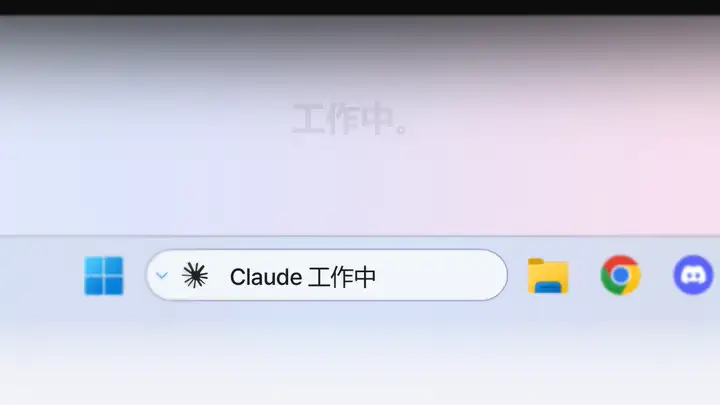
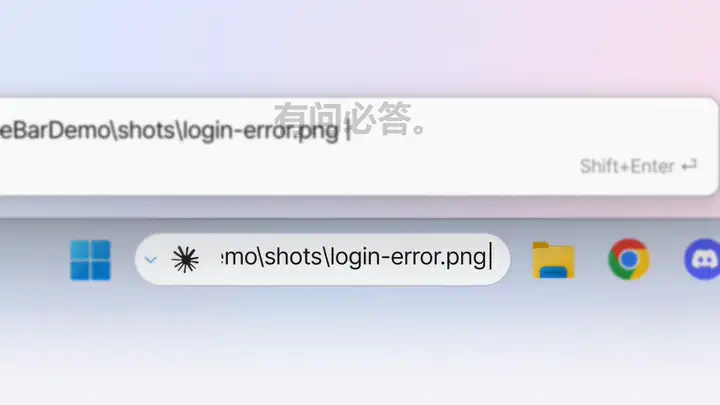
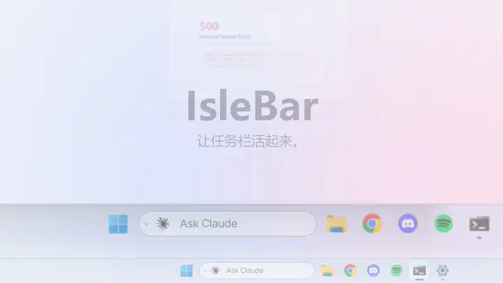
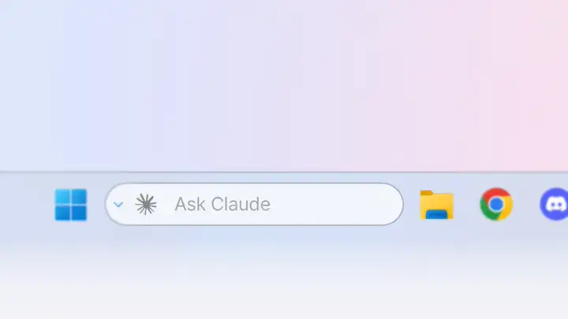
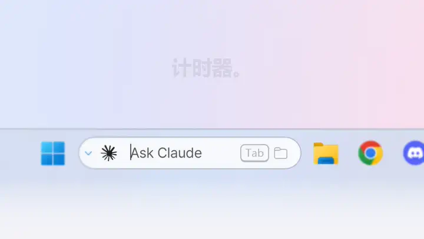
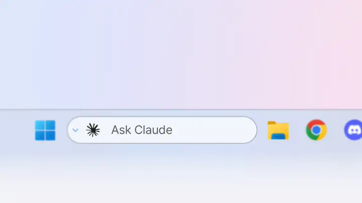
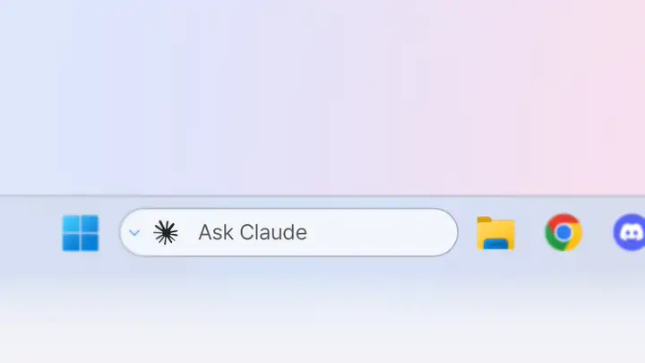

在任务栏直接提问。
点击胶囊或按 Ctrl+Alt+C，输入你想做的事，再按 Enter。终端随即打开，Claude Code 或 Codex 带着你的问题开始工作。
- ↑ ↓ 可调出最近 50 条提问。
- 长问题会在栏上方预览；Shift+Enter 打开多行输入框。
- ⌄ 按钮里可保存你的选项：会话、模型、思考强度、权限、远程控制。
让 Windows 11 任务栏活起来。在搜索框里向 Claude Code 或 Codex 提问——它在工作、在等你，还是已经完成，一眼便知。
IsleBar 运行于 Windows 11（x64），需将任务栏搜索显示为搜索框或图标。
工作中。等你回复。已完成。搜索框会告诉你——Claude Code 或 Codex 干活时，你尽可以去忙别的。橙色边框表示它在等你回答，绿色表示已经完成。

胶囊就待在搜索框原来的位置，变的只是里面的内容。

点击胶囊或按 Ctrl+Alt+C，输入你想做的事，再按 Enter。终端随即打开，Claude Code 或 Codex 带着你的问题开始工作。

把截图或日志拖到胶囊上——文件路径会填进输入框，接着提问就行。

Codex CLI 同样显示 工作中 · 等你回复 · 已完成。它的标志读取自你电脑上已安装的 Codex 扩展——IsleBar 本身不附带任何 OpenAI 标志。

输入 25m、90s 或 1h 30m，按 Enter。只有变化的数字会滚动。

按 Tab 开始输入——所有磁盘中的匹配结果随输随现，显示在任务栏上方，由 Everything 提供支持。

Chrome、Edge、Firefox 等浏览器的下载会在进行时显示，完成后显示文件名和已完成。点击即可在文件资源管理器中查看该文件。

Spotify、浏览器里的 YouTube 以及大多数播放器，都会显示专辑封面、音量跳动条和专辑配色的进度条。悬停即可 ⏮ ⏯ ⏭。
歌放到一半时智能体完成了任务，绿色边框会亮起，但不会挡住音乐。

耳机、充电、网络、复制的文本、CPU 或内存占用过高、专注时段、日历日程、麦克风或摄像头正在使用——每条都只显示片刻，随即让开。没有弹窗。
每种颜色只有一个含义：橙色表示 AI 在等你回答，红色表示需要处理（电量不足，或 AI 因用量上限或错误而停止），绿色表示事情已完成。免打扰期间不播放提示音，全屏游戏和视频时也可以静音。

IsleBar 跟随 Windows 主题，切换的瞬间就会换色——无需重启。
是的——基于 MIT 许可证免费开源。欢迎在 GitHub 上提交修复、想法和反馈。
思路相近——一个灵动岛风格的实时胶囊，但它位于 Windows 11 任务栏搜索框的位置，而不是悬浮在屏幕上方。它是独立应用，不是 Apple 的产品。
安装 IsleBar 并开启 Claude Code / Codex 连接（安装时勾选一项）。需要你回答时胶囊显示橙色边框，完成时显示绿色边框并播放提示音，无需一直盯着终端。
只有 AI 功能需要——在栏上提问，以及查看工作中 · 等你回复 · 已完成。音乐、计时器、下载和通知无需它们也能使用；文件搜索需要 Everything。
不会。它只在你的电脑上运行。崩溃报告需要你主动开启，且只包含错误信息、版本号和基本设备信息——绝不包含窗口标题、文件、提示词或你的 IP。隐私政策。
请选择 更多信息 → 仍要运行。代码签名正在准备中。
设置 › 应用 › IsleBar › 卸载。原来的搜索框会恢复，IsleBar 的钩子也会一并移除(商店版请先在 IsleBar 设置中关闭 Claude Code / Codex 连接)。
English, 简体中文, 繁體中文, Français, Deutsch, Italiano, 日本語, 한국어, Português, Español——跟随你的 Windows 语言。
遇到问题、有想法或疑问——欢迎在 GitHub 上或通过邮件告诉我们。